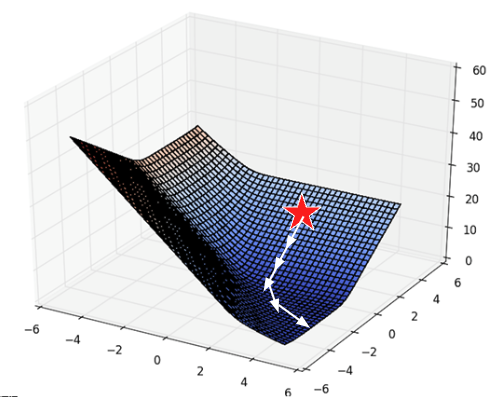

Code
import seaborn as sns
import numpy as np
df = sns.load_dataset("tips")At this point, we’ve grown quite familiar with the modeling process. We’ve introduced the concept of loss, used it to fit several types of models, and, most recently, extended our analysis to multiple regression. Along the way, we’ve forged our way through the mathematics of deriving the optimal model parameters in all its gory detail. It’s time to make our lives a little easier – let’s implement the modeling process in code!
In this lecture, we’ll explore two techniques for model fitting:
pythonpython’s sklearn packageWith our new programming frameworks in hand, we will also add sophistication to our models by introducing more complex features to enhance model performance.
Before we dive into feature engineering, let’s expand on gradient descent, which we began covering in the last lecture. Recall that gradient descent is a powerful technique for choosing the model parameters that minimize the loss function.
The function we worked with above was one-dimensional – we were only minimizing the function with respect to a single parameter, \(\theta\). However, models usually have a cost function with multiple parameters that need to be optimized. For example, simple linear regression has 2 parameters: \[\hat{y} + \theta_0 + \theta_1x\] and multiple linear regression has \(p+1\) parameters: \[\mathbb{Y} = \theta_0 + \theta_1 \Bbb{X}_{:,1} + \theta_2 \Bbb{X}_{:,2} + \cdots + \theta_p \Bbb{X}_{:,p}\]
We’ll need to expand gradient descent so we can update our guesses for all model parameters all in one go.
With multiple parameters to optimize, we consider a loss surface, or the model’s loss for a particular combination of possible parameter values.
import seaborn as sns
import numpy as np
df = sns.load_dataset("tips")import plotly.graph_objects as go
def mse_loss(theta, X, y_obs):
y_hat = X @ theta
return np.mean((y_hat - y_obs) ** 2)
tips_with_bias = df.copy()
tips_with_bias["bias"] = 1
tips_with_bias = tips_with_bias[["bias", "total_bill"]]
uvalues = np.linspace(0, 2, 10)
vvalues = np.linspace(-0.1, 0.35, 10)
(u,v) = np.meshgrid(uvalues, vvalues)
thetas = np.vstack((u.flatten(),v.flatten()))
def mse_loss_single_arg(theta):
return mse_loss(theta, tips_with_bias, df["tip"])
MSE = np.array([mse_loss_single_arg(t) for t in thetas.T])
loss_surface = go.Surface(x=u, y=v, z=np.reshape(MSE, u.shape))
ind = np.argmin(MSE)
optimal_point = go.Scatter3d(name = "Optimal Point",
x = [thetas.T[ind,0]], y = [thetas.T[ind,1]],
z = [MSE[ind]],
marker=dict(size=10, color="red"))
fig = go.Figure(data=[loss_surface, optimal_point])
fig.update_layout(scene = dict(
xaxis_title = "theta0",
yaxis_title = "theta1",
zaxis_title = "MSE"), autosize=False, width=800, height=600)
fig.show()We can also visualize a bird’s-eye view of the loss surface from above using a contour plot:
contour = go.Contour(x=u[0], y=v[:, 0], z=np.reshape(MSE, u.shape))
fig = go.Figure(contour)
fig.update_layout(
xaxis_title = "theta0",
yaxis_title = "theta1", autosize=False, width=800, height=600)
fig.show()As before, the derivative of the loss function tells us the best way towards the minimum value.
On a 2D (or higher) surface, the best way to go down (gradient) is described by a vector.
|  |
For the vector of parameter values \(\vec{\theta} = \begin{bmatrix} \theta_{0} \\ \theta_{1} \\ \end{bmatrix}\), we take the partial derivative of loss with respect to each parameter: \(\frac{\partial L}{\partial \theta_0}\) and \(\frac{\partial L}{\partial \theta_1}\).
For example, consider the 2D function: \[f(\theta_0, \theta_1) = 8 \theta_0^2 + 3\theta_0\theta_1\] For a function of 2 variables \(f(\theta_0, \theta_1)\), we define the gradient \[ \begin{align} \frac{\partial f}{\partial \theta_{0}} &= 16\theta_0 + 3\theta_1 \\ \frac{\partial f}{\partial \theta_{1}} &= 3\theta_0 \\ \nabla_{\vec{\theta}} f(\vec{\theta}) &= \begin{bmatrix} 16\theta_0 + 3\theta_1 \\ 3\theta_0 \\ \end{bmatrix} \end{align} \]
The gradient vector of a generic function of \(p+1\) variables is therefore \[\nabla_{\vec{\theta}} L = \begin{bmatrix} \frac{\partial L}{\partial \theta_0} \\ \frac{\partial L}{\partial \theta_1} \\ \vdots \\ \frac{\partial L}{\partial \theta_p} \end{bmatrix}\] where \(- \nabla_\vec{\theta} L\) always points in the downhill direction of the surface. We can interpret each gradient as: “If I nudge the \(i\)th model weight, what happens to loss?”
We can use this to update our 1D gradient rule for models with multiple parameters.
Recall our 1D update rule: \[\theta^{(t+1)} = \theta^{(t)} - \alpha \frac{d}{d\theta}L(\theta^{(t)})\]
For models with multiple parameters, we work in terms of vectors: \[\begin{bmatrix} \theta_{0}^{(t+1)} \\ \theta_{1}^{(t+1)} \\ \vdots \end{bmatrix} = \begin{bmatrix} \theta_{0}^{(t)} \\ \theta_{1}^{(t)} \\ \vdots \end{bmatrix} - \alpha \begin{bmatrix} \frac{\partial L}{\partial \theta_{0}} \\ \frac{\partial L}{\partial \theta_{1}} \\ \vdots \\ \end{bmatrix}\]
Written in a more compact form, \[\vec{\theta}^{(t+1)} = \vec{\theta}^{(t)} - \alpha \nabla_{\vec{\theta}} L(\theta^{(t)}) \]
Note that \(-\nabla_{\vec{\theta}} L\) always points in the downhill direction of the surface.
Let’s now walk through an example of calculating and updating the gradient vector. Say our model and loss are: \[\begin{align} f_{\vec{\theta}}(\vec{x}) &= \vec{x}^T\vec{\theta} = \theta_0x_0 + \theta_1x_1 \\l(y, \hat{y}) &= (y - \hat{y})^2 \end{align} \]
Plugging in \(f_{\vec{\theta}}(\vec{x})\) for \(\hat{y}\), our loss function becomes \(l(\vec{\theta}, \vec{x}, y_i) = (y_i - \theta_0x_0 - \theta_1x_1)^2\).
To calculate our gradient vector, we can start by computing the partial derivative of the loss function with respect to \(\theta_0\): \[\frac{\partial}{\partial \theta_{0}} l(\vec{\theta}, \vec{x}, y_i) = 2(y_i - \theta_0x_0 - \theta_1x_1)(-x_0)\]
Let’s now do the same but with respect to \(\theta_1\): \[\frac{\partial}{\partial \theta_{1}} l(\vec{\theta}, \vec{x}, y_i) = 2(y_i - \theta_0x_0 - \theta_1x_1)(-x_1)\]
Putting this together, our gradient vector is: \[\nabla_{\theta} l(\vec{\theta}, \vec{x}, y_i) = \begin{bmatrix} -2(y_i - \theta_0x_0 - \theta_1x_1)(x_0) \\ -2(y_i - \theta_0x_0 - \theta_1x_1)(x_1) \end{bmatrix}\]
Remember that we need to keep updating \(\theta\) until the algorithm converges to a solution and stops updating significantly (or at all). When updating \(\theta\), we’ll have a fixed number of updates and subsequent updates will be quite small (we won’t change \(\theta\) by much).
Formally, the algorithm we derived above is called batch gradient descent. For each iteration of the algorithm, the derivative of loss is computed across the entire batch of all \(n\) datapoints. While this update rule works well in theory, it is not practical in most circumstances. For large datasets (with perhaps billions of datapoints), finding the gradient across all the data is incredibly computationally taxing; gradient descent will converge slowly because each individual update is slow.
Stochastic (mini-batch) gradient descent tries to address this issue. In stochastic descent, only a sample of the full dataset is used at each update. We estimate the true gradient of the loss surface using just that sample of data. The batch size is the number of data points used in each sample. The sampling strategy is generally without replacement (data is shuffled and batch size examples are selected one at a time.)
Each complete “pass” through the data is known as a training epoch. After shuffling the data, in a single training epoch of stochastic gradient descent, we
Every data point appears once in a single training epoch. We then perform several training epochs until we’re satisfied.
Batch gradient descent is a deterministic technique – because the entire dataset is used at each update iteration, the algorithm will always advance towards the minimum of the loss surface. In contrast, stochastic gradient descent involve an element of randomness. Since only a subset of the full data is used to update the guess for \(\vec{\theta}\) at each iteration, there’s a chance the algorithm will not progress towards the true minimum of loss with each update. Over the longer term, these stochastic techniques should still converge towards the optimal solution.
The diagrams below represent a “bird’s eye view” of a loss surface from above. Notice that batch gradient descent takes a direct path towards the optimal \(\hat{\theta}\). Stochastic gradient descent, in contrast, “hops around” on its path to the minimum point on the loss surface. This reflects the randomness of the sampling process at each update step.

|
The time complexity of a single gradient descent step takes only \(O(nd)\) time where \(n\) is the number of samples (rows) and \(d\) is the number of features (columns).

Suppose we run \(T\) iterations. The final complexity would then be \(O(Tnd)\). Typically, \(n\) is much larger than \(T\) and \(d\). How can we reduce the cost of this algorithm using a technique from Data 100? Do we really need to use \(n\) data points? We don’t! Instead, we can use stochastic gradient descent.
We know that our true gradient of \(\nabla_{\vec{\theta}} L (\vec{\theta^{(t)}}) = \frac{1}{n}\sum_{i=1}^{n}\nabla_{\vec{\theta}} l(y_i, f_{\vec{\theta}^{(t)}}(X_i))\) has a time complexity of \(O(nd)\). Instead of using all \(n\) samples to calculate the true gradient of the loss surface, let’s use a probability sample of our data to approximate the gradient!
Say we sample \(b\) records (\(s_1, \cdots, s_b\)) from our \(n\) datapoints. Our new (stochastic) gradient descent function will be: \[\nabla_{\vec{\theta}} L (\vec{\theta}^{(t)}) \approx \frac{1}{\textcolor{red}{b}}\sum_{i=1}^{\textcolor{red}{b}}\nabla_{\vec{\theta}} l(y_{\textcolor{red}{s_i}}, f_{\vec{\theta}^{(t)}}(X_{\textcolor{red}{s_i}}))\] and will now have a time complexity of \(O(bd)\), which is much faster! For more on computational complexity, see the bonus section at the end.
Summarizing our two gradient descent techniques:


To summarize the tradeoffs of batch size:
| Smaller Batch Size | Larger Batch Size | |
|---|---|---|
| Pros | More frequent gradient updates | Leverage hardware acceleration to improve overall system performance and higher quality gradient updates |
| Cons | More variability in the gradient estimates | Less frequent gradient updates |
The typical solution is to set batch size to ensure sufficient hardware utilization.
Feature engineering is the process of transforming raw features into more informative features that can be used in modeling or EDA tasks and improve model performance.
Feature engineering allows you to:
A feature function describes the transformations we apply to raw features in a dataset to create a design matrix of transformed features (typically denoted as \(\Phi\)). When we apply the feature function to our original dataset \(\mathbb{X}\), the result, \(\Phi(\mathbb{X})\), is a transformed design matrix ready to be used in modeling.
For example, we might design a feature function that computes the square of an existing feature and adds it to the design matrix. In this case, our existing matrix \([x]\) is transformed to \([x, x^2]\). Its dimension increases from 1 to 2. Often, the dimension of the featurized dataset increases as seen here.

The new features introduced by the feature function can then be used in modeling. Often, we use the symbol \(\phi_i\) to represent transformed features after feature engineering.
\[ \begin{align} \hat{y} &= \theta_0 + \theta_1 x + \theta_2 x^2 \\ \hat{y} &= \theta_0 + \theta_1 \phi_1 + \theta_2 \phi_2 \end{align} \]
In matrix notation, the symbol \(\Phi\) is sometimes used to denote the design matrix after feature engineering has been performed. Note that in the usage below, \(\Phi\) is now a feature-engineered matrix, rather than a function.
\[\hat{\mathbb{Y}} = \Phi \theta\]
More formally, we describe a feature function as transforming the original \(\mathbb{R}^{n \times p}\) dataset \(\mathbb{X}\) to a featurized \(\mathbb{R}^{n \times p'}\) dataset \(\mathbb{\Phi}\), where \(p'\) is typically greater than \(p\).
\[\mathbb{X} \in \mathbb{R}^{n \times p} \longrightarrow \Phi \in \mathbb{R}^{n \times p'}\]
A particularly powerful use of feature engineering is to allow us to perform regression on non-numeric features. One-hot encoding is a feature engineering technique that generates numeric features from categorical data, allowing us to use our usual methods to fit a regression model on the data.
To illustrate how this works, we’ll refer back to the tips dataset from previous lectures. Consider the "day" column of the dataset:
import numpy as np
import seaborn as sns
import pandas as pd
import sklearn.linear_model as lm
tips = sns.load_dataset("tips")
tips.head()| total_bill | tip | sex | smoker | day | time | size | |
|---|---|---|---|---|---|---|---|
| 0 | 16.99 | 1.01 | Female | No | Sun | Dinner | 2 |
| 1 | 10.34 | 1.66 | Male | No | Sun | Dinner | 3 |
| 2 | 21.01 | 3.50 | Male | No | Sun | Dinner | 3 |
| 3 | 23.68 | 3.31 | Male | No | Sun | Dinner | 2 |
| 4 | 24.59 | 3.61 | Female | No | Sun | Dinner | 4 |
At first glance, it doesn’t seem possible to fit a regression model to this non-numeric data – we can’t directly perform any mathematical operations on the entry “Sun”.
To resolve this, we instead create a new table with a feature for each unique value in the original "day" column. We then iterate through the "day" column. For each entry in "day" we fill the corresponding feature in the new table with 1. All other features are set to 0.

The OneHotEncoder class of sklearn (documentation) offers a quick way to perform this one-hot encoding. You will explore its use in detail in the lab. For now, recognize that we follow a very similar workflow to when we were working with the LinearRegression class: we initialize a OneHotEncoder object, fit it to our data, and finally use .transform() to apply the fitted encoder.
from sklearn.preprocessing import OneHotEncoder
# Initialize a OneHotEncoder object
ohe = OneHotEncoder()
# Fit the encoder
ohe.fit(tips[["day"]])
# Use the encoder to transform the raw "day" feature
encoded_day = ohe.transform(tips[["day"]]).toarray()
encoded_day_df = pd.DataFrame(encoded_day, columns=ohe.get_feature_names_out())
encoded_day_df.head()| day_Fri | day_Sat | day_Sun | day_Thur | |
|---|---|---|---|---|
| 0 | 0.0 | 0.0 | 1.0 | 0.0 |
| 1 | 0.0 | 0.0 | 1.0 | 0.0 |
| 2 | 0.0 | 0.0 | 1.0 | 0.0 |
| 3 | 0.0 | 0.0 | 1.0 | 0.0 |
| 4 | 0.0 | 0.0 | 1.0 | 0.0 |
The one-hot encoded features can then be used in the design matrix to train a model:
\[\hat{y} = \theta_1 (\text{total}\_\text{bill}) + \theta_2 (\text{size}) + \theta_3 (\text{day}\_\text{Fri}) + \theta_4 (\text{day}\_\text{Sat}) + \theta_5 (\text{day}\_\text{Sun}) + \theta_6 (\text{day}\_\text{Thur})\]
Or in shorthand:
\[\hat{y} = \theta_{1}\phi_{1} + \theta_{2}\phi_{2} + \theta_{3}\phi_{3} + \theta_{4}\phi_{4} + \theta_{5}\phi_{5} + \theta_{6}\phi_{6}\]
Now, the day feature (or rather, the four new boolean features that represent day) can be used to fit a model.
Using sklearn to fit the new model, we can determine the model coefficients, allowing us to understand how each feature impacts the predicted tip.
from sklearn.linear_model import LinearRegression
data_w_ohe = tips[["total_bill", "size", "day"]].join(encoded_day_df).drop(columns = "day")
ohe_model = lm.LinearRegression(fit_intercept=False) #Tell sklearn to not add an additional bias column. Why?
ohe_model.fit(data_w_ohe, tips["tip"])
pd.DataFrame({"Feature":data_w_ohe.columns, "Model Coefficient":ohe_model.coef_})| Feature | Model Coefficient | |
|---|---|---|
| 0 | total_bill | 0.092994 |
| 1 | size | 0.187132 |
| 2 | day_Fri | 0.745787 |
| 3 | day_Sat | 0.621129 |
| 4 | day_Sun | 0.732289 |
| 5 | day_Thur | 0.668294 |
For example, when looking at the coefficient for day_Fri, we can now understand the impact of it being Friday on the predicted tip — if it is a Friday, the predicted tip increases by approximately $0.75.
When one-hot encoding, keep in mind that any set of one-hot encoded columns will always sum to a column of all ones, representing the bias column. More formally, the bias column is a linear combination of the OHE columns.

We must be careful not to include this bias column in our design matrix. Otherwise, there will be linear dependence in the model, meaning \(\mathbb{X}^{\top}\mathbb{X}\) would no longer be invertible, and our OLS estimate \(\hat{\theta} = (\mathbb{X}^{\top}\mathbb{X})^{-1}\mathbb{X}^{\top}\mathbb{Y}\) fails.
To resolve this issue, we simply omit one of the one-hot encoded columns or do not include an intercept term. The adjusted design matrices are shown below.

Either approach works — we still retain the same information as the omitted column being a linear combination of the remaining columns.
We have encountered a few cases now where models with linear features have performed poorly on datasets that show clear non-linear curvature.
As an example, consider the vehicles dataset, which contains information about cars. Suppose we want to use the hp (horsepower) of a car to predict its "mpg" (gas mileage in miles per gallon). If we visualize the relationship between these two variables, we see a non-linear curvature. Fitting a linear model to these variables results in a high (poor) value of RMSE.
\[\hat{y} = \theta_0 + \theta_1 (\text{hp})\]
pd.options.mode.chained_assignment = None
vehicles = sns.load_dataset("mpg").dropna().rename(columns = {"horsepower": "hp"}).sort_values("hp")
X = vehicles[["hp"]]
Y = vehicles["mpg"]
hp_model = lm.LinearRegression()
hp_model.fit(X, Y)
hp_model_predictions = hp_model.predict(X)
import matplotlib.pyplot as plt
sns.scatterplot(data=vehicles, x="hp", y="mpg")
plt.plot(vehicles["hp"], hp_model_predictions, c="tab:red");
print(f"MSE of model with (hp) feature: {np.mean((Y-hp_model_predictions)**2)}")MSE of model with (hp) feature: 23.943662938603104
As we can see from the plot, the data follows a curved line rather than a straight one. To capture this non-linearity, we can incorporate non-linear features. Let’s introduce a polynomial term, \(\text{hp}^2\), into our regression model. The model now takes the form:
\[\hat{y} = \theta_0 + \theta_1 (\text{hp}) + \theta_2 (\text{hp}^2)\] \[\hat{y} = \theta_0 + \theta_1 \phi_1 + \theta_2 \phi_2\]
How can we fit a model with non-linear features? We can use the exact same techniques as before: ordinary least squares, gradient descent, or sklearn. This is because our new model is still a linear model. Although it contains non-linear features, it is linear with respect to the model parameters. All of our previous work on fitting models was done under the assumption that we were working with linear models. Because our new model is still linear, we can apply our existing methods to determine the optimal parameters.
# Add a hp^2 feature to the design matrix
X = vehicles[["hp"]]
X["hp^2"] = vehicles["hp"]**2
# Use sklearn to fit the model
hp2_model = lm.LinearRegression()
hp2_model.fit(X, Y)
hp2_model_predictions = hp2_model.predict(X)
sns.scatterplot(data=vehicles, x="hp", y="mpg")
plt.plot(vehicles["hp"], hp2_model_predictions, c="tab:red");
print(f"MSE of model with (hp^2) feature: {np.mean((Y-hp2_model_predictions)**2)}")MSE of model with (hp^2) feature: 18.98476890761722
Looking a lot better! By incorporating a squared feature, we are able to capture the curvature of the dataset. Our model is now a parabola centered on our data. Notice that our new model’s error has decreased relative to the original model with linear features.
We’ve seen now that feature engineering allows us to build all sorts of features to improve the performance of the model. In particular, we saw that designing a more complex feature (squaring hp in the vehicles data previously) substantially improved the model’s ability to capture non-linear relationships. To take full advantage of this, we might be inclined to design increasingly complex features. Consider the following three models, each of different order (the maximum exponent power of each model):

As we can see in the plots above, MSE continues to decrease with each additional polynomial term. To visualize it further, let’s plot models as the complexity increases from 0 to 7:

When we use our model to make predictions on the same data that was used to fit the model, we find that the MSE decreases with each additional polynomial term (as our model gets more complex). The training error is the model’s error when generating predictions from the same data that was used for training purposes. We can conclude that the training error goes down as the complexity of the model increases.

This seems like good news – when working on the training data, we can improve model performance by designing increasingly complex models.
Given \(N\) overlapping data points, we can always find a polynomial of degree \(N-1\) that goes through all those points.
For example, there always exists a degree-4 polynomial curve that can perfectly model a dataset of 5 datapoints:
However, high model complexity comes with its own set of issues. When building the vehicles models above, we trained the models on the entire dataset and then evaluated their performance on this same dataset. In reality, we are likely to instead train the model on a sample from the population, then use it to make predictions on data it didn’t encounter during training.
Let’s walk through a more realistic example. Say we are given a training dataset of just 6 datapoints and want to train a model to then make predictions on a different set of points. We may be tempted to make a highly complex model (e.g., degree 5), especially given it makes perfect predictions on the training data as clear on the left. However, as shown in the graph on the right, this model would perform horribly on the rest of the population!
This phenomenon called overfitting. The model effectively just memorized the training data it encountered when it was fitted, leaving it unable to generalize well to data it didn’t encounter during training. This is a problem: we want models that are generalizable to “unseen” data.
Additionally, since complex models are sensitive to the specific dataset used to train them, they have high variance. A model with high variance tends to vary more dramatically when trained on different datasets. Going back to our example above, we can see our degree-5 model varies erratically when we fit it to different samples of 6 points from vehicles.

We now face a dilemma: we know that we can decrease training error by increasing model complexity, but models that are too complex start to overfit and can’t be reapplied to new datasets due to high variance.
We can see that there is a clear trade-off that comes from the complexity of our model. As model complexity increases, the model’s error on the training data decreases. At the same time, the model’s variance tends to increase.
The takeaway here: we need to strike a balance in the complexity of our models; we want models that are generalizable to “unseen” data. A model that is too simple won’t be able to capture the key relationships between our variables of interest; a model that is too complex runs the risk of overfitting.
This begs the question: how do we control the complexity of a model? Stay tuned for Lecture 16 on Cross-Validation and Regularization!
Let’s now dive deeper into gradient and stochastic gradient descent. We discussed earlier how finding the gradient across all the data is extremeley computationally taxing and takes a lot of resources to calculate. Here we’ll explore why this is true.
We know that the solution to the normal equation is \(\hat{\theta} = (\mathbb{X}^T\mathbb{X})^{-1}\mathbb{X}^T\mathbb{Y}\). Let’s break this down and determine the computational complexity for this solution.

Let \(n\) be the number of samples (rows) and \(d\) be the number of features (columns).
In total, calculating the solution to the normal equation takes \(O(nd^2) + O(d^3) + O(nd) + O(d^2)\) time. We can see that \(O(nd^2) + O(d^3)\) dominates the complexity — this can be problematic for high-dimensional models and very large datasets.
PyTorchWhile this material is out of scope for Data 100, it is useful if you plan to enter a career in data science!
In practice, you will use software packages such as PyTorch when computing gradients and implementing gradient descent. You’ll often follow three main steps:
If you want to learn more, this Intro to PyTorch tutorial is a great resource to get started!